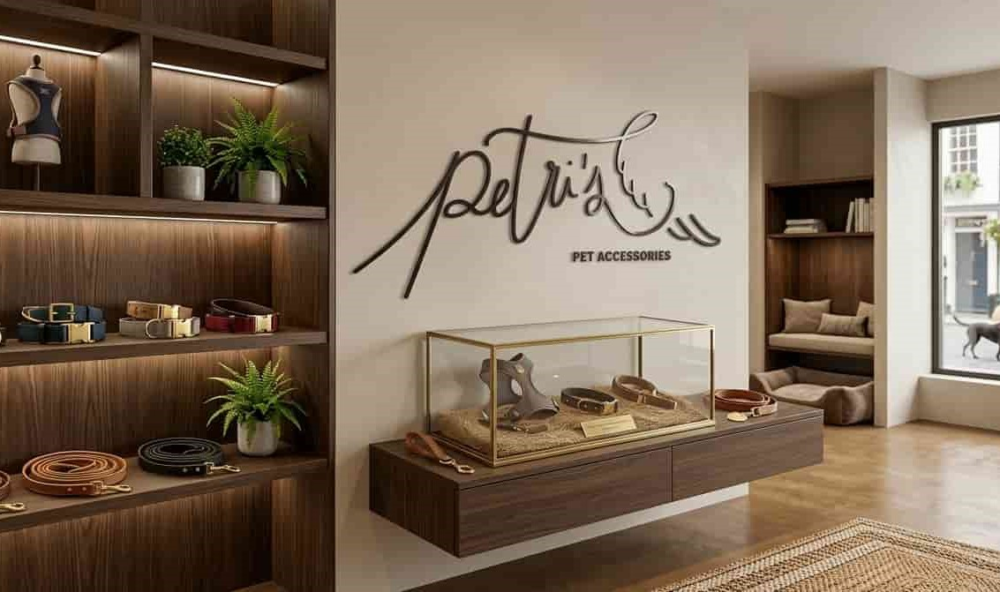

Bienvenido/a, soy Reyes Delgado
Conecto la investigación estratégica con el análisis de datos para que las marcas dejen de adivinar y empiecen a crecer con seguridad.
¿Qué puedo aportar a tu marca?
Me gusta entender las historias y emociones que impulsan cada decisión de compra, pero mi enfoque no se queda ahí: transformo esa comprensión en soluciones tácticas, útiles y rentables.
Mi mayor valor es la capacidad de "leer entre líneas". No me limito a analizar cifras; combino una visión analítica con el uso avanzado de IA para aportar perspectiva, agilidad y rigor estratégico. Ayudo a marcas que buscan innovar en sus procesos y multiplicar sus resultados, trabajando siempre con datos reales y una mentalidad orientada a la mejora continua.
Trabajos realizados
Pantry Chef
Estrategia digital y diseño web
Saber más sobre este proyecto →Cubiertas Diansa
Gestión y creación de contenidos para redes sociales
Saber más sobre este proyecto →
Petri's Pets
Gestión y creación de contenidos para redes sociales
Saber más sobre este proyecto →Mis habilidades y conocimiento
Analítica y SEO
Saber másAnalítica y SEO
Transformo métricas en decisiones con GA4, Hotjar, Search Console y Power BI. Domino el SEO técnico y estratégico con SE Ranking y Screaming Frog.
Diseño y vídeo
Saber másDiseño y vídeo
Tengo experiencia en diseño gráfico utilizando Canva y Procreate y en edición de vídeo utilizando CapCut e iMovie para contenido de alto impacto.
Contenido y web
Saber másContenido y web
Me manejo con WordPress, PrestaShop y Drupal para gestionar contenido. Además, cuento con experiencia en email marketing mediante Mailchimp y Constant Contact y conocimientos de HTML/CSS, utilizando herramientas como VS Code.
Paid media y redes sociales
Saber másPaid media y redes sociales
He gestionado campañas en Google Ads y Meta Ads. Además, he administrado las redes sociales de diversos clientes mediante Meta Business Suite, planificando contenido y supervisando los insights.
Productividad
Saber másProductividad
Organizo y gestiono tareas mediante herramientas como Notion y Trello. Además, domino suites de productividad como Microsoft Office y Google Workspace, lo que me permite coordinar proyectos de forma eficiente, estructurada y colaborativa.
IA
Saber másIA
Me apasiona explorar nuevas herramientas de IA y estar al día de las últimas tendencias en marketing y tecnología. Utilizo soluciones como Claude Code para automatizar tareas rutinarias y optimizar procesos.